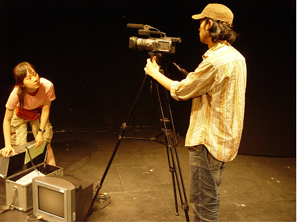
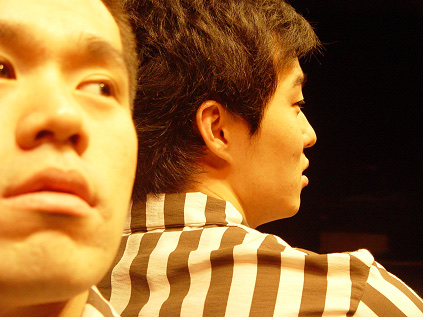
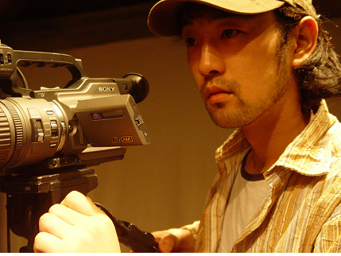
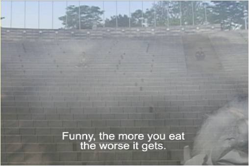
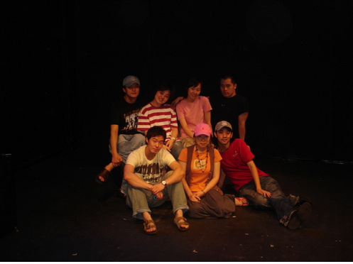

Performance · Directorial Debut — 2006
Kino Drama
Searching for Godot고도를 찾아가는 영극(映劇)
한 영화감독이 단편을 만든다. 그의 의식 속에서 디디와 고고가 걸어 나와, 영화와 연극이 맞물리는 ‘영극(映劇)’이 시작된다.
A film director is making a short. From inside his mind, Didi and Gogo step out — and a ‘kino-drama,’ where film and theater interlock, begins.
‘고도를 찾아가는 영극’은 사무엘 베케트의 희곡 《고도를 기다리며》를 영화와 연극이 맞물리는 형식으로 재구성한 작업이자, 김제민의 연출 데뷔작입니다. 베케트 극에 반복적으로 나타나는 기다림의 액션, 떠나려는 시도, 되풀이되는 말과 행동을 통해 ‘시간의 문제’를 주관적인 영상으로 담아냅니다.
공연 예술의 핵심은 ‘현존(現存)’이고, 영상은 스크린에 투영되는 24프레임의 허상(虛像)입니다. 이 작업은 두 예술 장르가 지닌 고유한 속성과 진정성을 각각 견지한 채 이들을 맞붙여 새로운 표현 가능성을 모색합니다. 《고도를 기다리며》의 ‘기다림’은 액션의 부재를 보여주는 대표적인 반(反)액션 — 고유한 현존의 의미를 좇지 않기에 연극의 관례를 깨뜨리며, 오히려 영상과 더 자유롭게 결합됩니다.
‘Kino Drama Searching for Godot’ recomposes Samuel Beckett’s Waiting for Godot into a form where film and theater interlock — and marks Kim Jae Min’s debut as a director. Through the play’s recurring actions of waiting, its attempts to leave, and its repeated words and gestures, it renders the ‘problem of time’ as subjective moving image. The essence of the performing arts is ‘presence,’ while video is a 24-frame illusion cast onto a screen. Holding to the distinct nature and authenticity of each medium, the work joins them in search of new expression. Beckett’s ‘waiting’ is a prime case of anti-action — an absence of action that, by not pursuing the meaning of presence, breaks theater’s convention and binds all the more freely with the image.
- 연출·구성
- Direction
- Kim Jae Min (김제민)
- 등장인물
- Characters
- 감독 · 조감독 · 디디(블라디미르) · 고고(에스트라공)
- Director · Assistant Director · Didi (Vladimir) · Gogo (Estragon)
- 장소
- Venues
- 소극장 예, 서울 · 혜화동1번지, 서울 (2006)
- Small Theater Ye · The Theater Laboratory Hyehwa-dong 1st, Seoul (2006)
- 키워드
- Keywords
- Beckett · metatheater · film × theater · mask/persona · presence & illusion
드라마투르기 — 저마다의 고도
Dramaturgy — Each Their Own Godot
감독과, 그의 의식에서 걸어 나온 인물들
A director and the figures who walk out of his mind
이야기는 한 감독이 단편영화를 만들어가는 과정입니다. 감독의 의식 속에 있던 두 인물 디디와 고고가 그를 찾아오고, 감독은 그들과의 작업을 통해 영화를 새로 만들어 갑니다. 결국 감독 자신과의 싸움입니다. 영화 《나비효과》에서 과거의 일기 한 줄을 고칠 때마다 미래가 달라지듯, 시간이 서로에게 영향을 주며 무언가가 생성됩니다. 오래전부터 감독을 짝사랑해 온 조감독에게 ‘고도’는 곧 감독이며, 감독과 조감독의 상하관계는 포조와 럭키를 연상시킵니다. 등장인물들은 각기 다른 자신만의 고도를 지니고 있습니다.
디디와 고고는 텍스트 속 인물이자 감독의 의식에서 나온 인물로, 자신이 언제든 재창조될 수 있다는 자기의지를 지닌 채 감독과 대립합니다. 이들은 지루한 해석의 말들을 끊임없이 지껄이고, 말과 입모양의 불일치를 통해 의미 없는 타임라인을 빼곡히 채웁니다. 그리고 끝내 페르소나(가면)를 벗지 못한 채, 부조리한 정황 속에서 가면 밖의 세상을 응시할 뿐입니다.
The story follows a director making a short film. Two figures who lived in his mind — Didi and Gogo — come to him, and through working with them he remakes the film; in the end, it is a fight with himself. As in the film The Butterfly Effect, where revising one line of a past diary alters the future, times affect one another and something is generated. For the assistant director, who has long harbored an unspoken love for him, ‘Godot’ is the director himself, and their hierarchy recalls Pozzo and Lucky. Each character carries their own Godot. Didi and Gogo — at once characters in the text and figures from the director’s consciousness — stand against him, aware they can always be re-created. They chatter endless lines of interpretation, filling a meaningless timeline through the mismatch of speech and mouth, and in the end, unable to remove their persona (mask), they only gaze at the world beyond it amid the absurd.
- 가면 / 페르소나
- Mask / Persona
- 등장인물은 환영이 아니라 ‘창조된 실재’로 등장한다. 가면은 그 인상이 예술적으로 구성되었음을 보여준다.
- The characters appear not as illusions but as a ‘created reality’; the mask shows that their impression is artistically composed.
- 메타씨어터
- Metatheater
- ‘자기 자신을 완전히 인식하고, 관객을 그 인식의 과정에 끌어들이는 연극’ (플레처)
- ‘Theater fully aware of itself, drawing the audience into that awareness’ (Fletcher)
Staging
동물원 우리, 그리고 두 대의 프로젝터
A zoo cage, and two projectors
고도는 베케트 극 중 가장 움직임이 많은 극이지만, 그 움직임은 동물원 우리에 갇힌 두 방랑자의 소용없는 몸부림으로 축약됩니다. 떠나자는 말은 헛된 약속이고, 극이 끝내 보여주는 것은 ‘갇혀 있음’입니다. 무대에서는 두 대의 프로젝터로 영상을 반씩 크롭해 하나의 화면으로 잇고, 실험영상 ‘Chamber’를 활용해 무대를 깊게 만들거나 동물원 우리의 이미지를 불러오며 영상과 무대가 특정 소품·타이밍으로 맞물리도록 연출했습니다.
Godot has more movement than any other Beckett play, yet that movement reduces to the useless writhing of two vagrants caged like animals in a zoo. ‘Let’s go’ is an empty promise; what the play finally shows is ‘being trapped.’ On stage, two projectors each crop half of the image and join it into a single screen, while the experimental video ‘Chamber’ deepens the stage and summons the image of the zoo cage — image and stage meshing through specific props and timing.
- 영상
- Video
- 2대 프로젝터 · 실험영상 ‘Chamber’ · 말/입모양 불일치
- Two projectors · experimental video ‘Chamber’ · speech / mouth mismatch
- 희비극
- Tragicomedy
- 인간 존재의 음울함을 장엄하게가 아니라 조롱하듯 우스꽝스럽게 — 극단적 부정 안에도 긍정의 흔적이 자리한다.
- The gloom of human existence rendered not with grandeur but with mockery — even in extreme negation, a trace of affirmation remains.
Seoul — 2006



